Box Cox transformation¶
 a
multivariate stochastic process of dimension
a
multivariate stochastic process of dimension  where
where
 and
and  is an event. We
suppose that the process is
is an event. We
suppose that the process is  .
. the random
variable at the vertex
the random
variable at the vertex  defined by
defined by
 .
. depends on the vertex
depends on the vertex
 , the Box Cox transformation maps the process
, the Box Cox transformation maps the process
 into the process
into the process  such that the variance of
such that the variance of
 is constant (at the first order at least) with
respect to .
is constant (at the first order at least) with
respect to .the estimation of the Box Cox transformation from a given field of the process
,the action of the Box Cox transformation on a field generated from
.
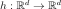
the Box Cox transformation which maps the process into the process
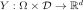
, where , such that
, such that  is independent of
at the first order. is a positive random variable for
any . To verify that constraint, it may be needed to
consider the shifted process
is independent of
at the first order. is a positive random variable for
any . To verify that constraint, it may be needed to
consider the shifted process  .
. in the
scalar case (=1), using the Taylor development of
in the
scalar case (=1), using the Taylor development of
 at the mean point of
. around
at the mean point of
. around
 writes:
writes: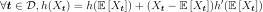
which leads to:
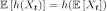
and then:
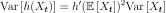
To have  constant with respect to
at the first order, we need:
constant with respect to
at the first order, we need:
(1)¶
Now, we make some additional hypotheses on the relation between
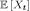
and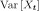
:If we suppose that
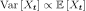
, then (1) leads to the function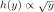
and we take ;
;If we suppose that
 , then
(1) leads to the function
, then
(1) leads to the function 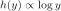
and we take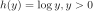
;More generally, if we suppose that
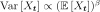
, then (1) leads to the function parametrized by
the scalar
parametrized by
the scalar  :
:
(2)¶

where  .
.
The inverse Box Cox transformation is defined by:
(3)¶
is estimated from a given field of the
process as follows. given below is optimized in the case
when 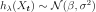
at each vertex. If it is not the case, that estimation
can be considered as a proposition, with no guarantee. are then estimated by
the maximum likelihood estimators. We note
are then estimated by
the maximum likelihood estimators. We note
 and
and  respectively the cumulative distribution function and the density
probability function of the
respectively the cumulative distribution function and the density
probability function of the  distribution., we have:
distribution., we have:(4)¶
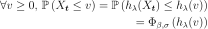
from which we derive the density probability function  of
for all vertices :
of
for all vertices :
(5)¶
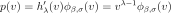
Using (5), the likelihood of the values
 with respect to the model (4)
writes:
with respect to the model (4)
writes:
(6)¶
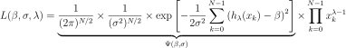
We notice that for each fixed , the likelihood equation
is proportional to the likelihood equation which estimates
 . Thus, the maximum likelihood estimator for
. Thus, the maximum likelihood estimator for
 for a given
are:
for a given
are:
(7)¶
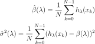
 likelihood, we obtain:
likelihood, we obtain:(8)¶
![\ell(\lambda) = \log L( \hat{\beta}(\lambda), \hat{\sigma}(\lambda),\lambda ) = C -
\frac{N}{2}
\log\left[\hat{\sigma}^2(\lambda)\right]
\;+\;
\left(\lambda - 1 \right) \sum_{k=0}^{N-1} \log(x_i)\,,](../../_images/math/059cb3e1aaff23e70d4f01d6542beae09b13543c.svg)
where  is a constant.
is a constant.
The parameter  is the one maximising
is the one maximising  defined in (8).
defined in (8).
API:
See
BoxCoxTransformSee
BoxCoxFactory
Examples: